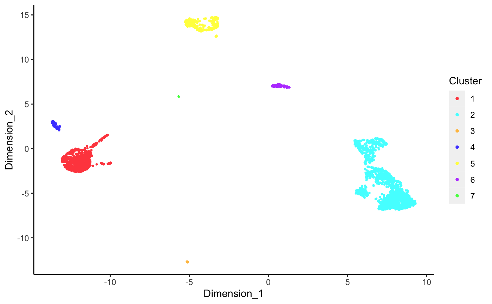
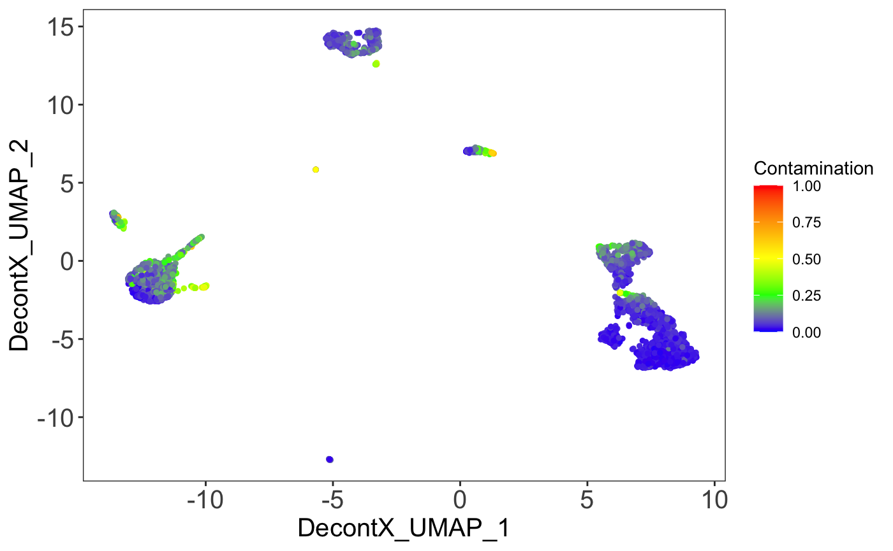
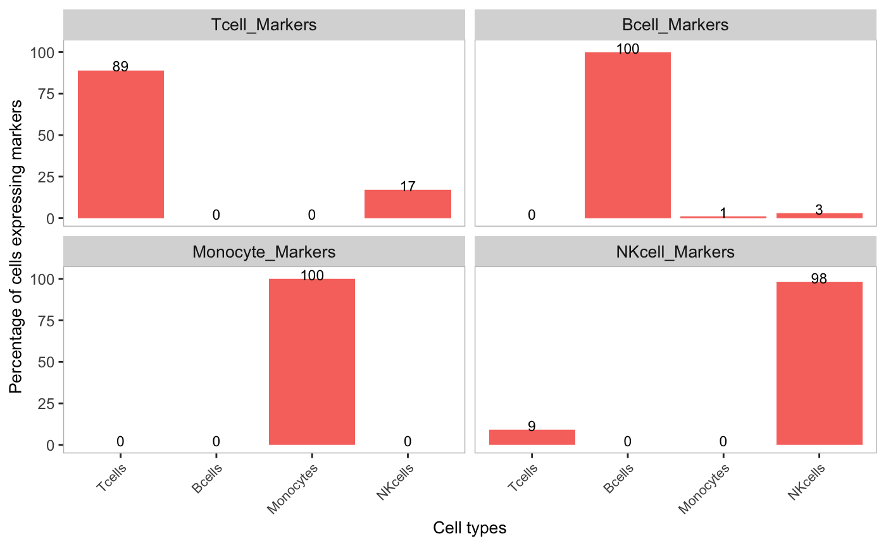
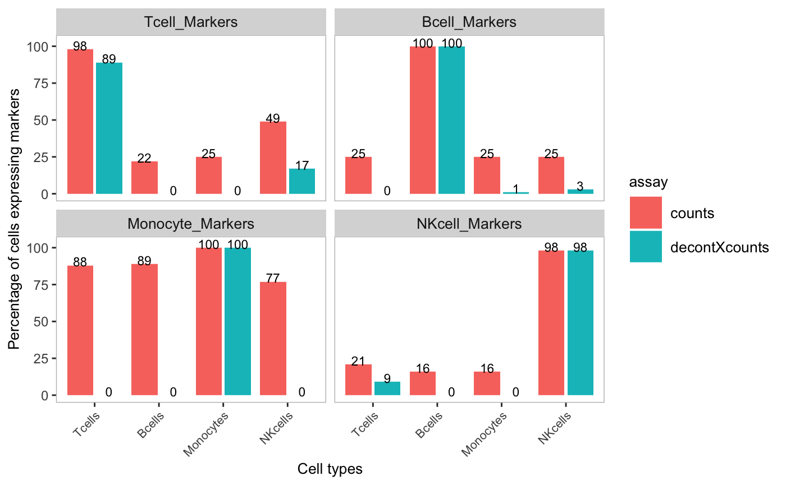
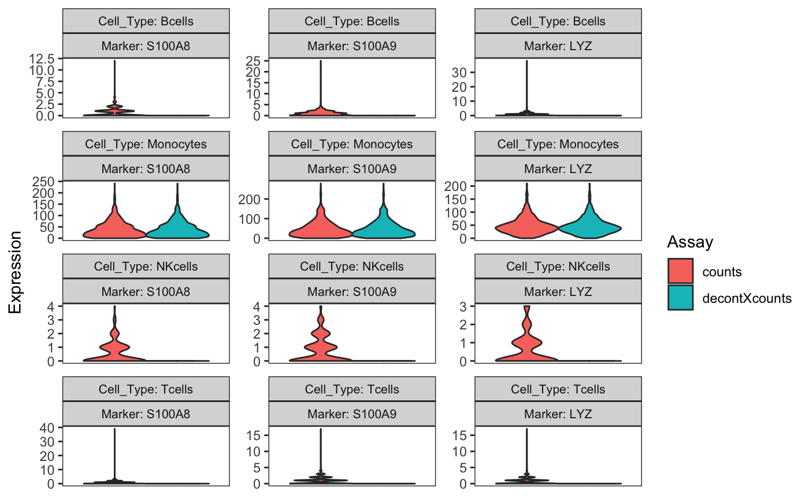
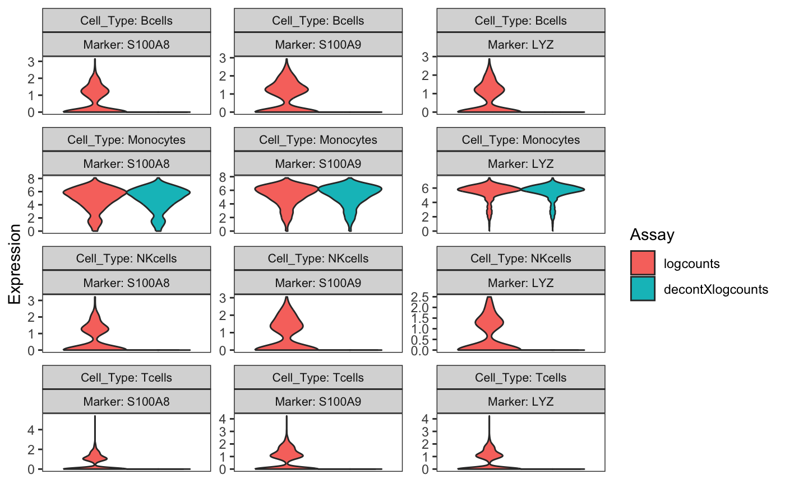

Decontamination of ambient RNA in single-cell genomic data with DecontX
Shiyi (Iris) Yang
Boston University School of MedicineZhe Wang
Boston University School of MedicineYuan Yin
Boston University School of MedicineJoshua Campbell
Boston University School of Medicinecamp@bu.edu
2022-10-22
Source:vignettes/decontX.Rmd
decontX.RmdIntroduction
Droplet-based microfluidic devices have become widely used to perform single-cell RNA sequencing (scRNA-seq). However, ambient RNA present in the cell suspension can be aberrantly counted along with a cell’s native mRNA and result in cross-contamination of transcripts between different cell populations. DecontX is a Bayesian method to estimate and remove contamination in individual cells. DecontX assumes the observed expression of a cell is a mixture of counts from two multinomial distributions: (1) a distribution of native transcript counts from the cell’s actual population and (2) a distribution of contaminating transcript counts from all other cell populations captured in the assay. Overall, computational decontamination of single cell counts can aid in downstream clustering and visualization.
The package can be loaded using the library command.
library(celda)## Warning: package 'IRanges' was built under R version 4.2.1## Warning: package 'GenomeInfoDb' was built under R version 4.2.1Importing data
DecontX can take either a SingleCellExperiment
object or a counts matrix as input. decontX will attempt to
convert any input matrix to class dgCMatrix from package Matrix
before starting the analysis.
To import datasets directly into an SCE object, the singleCellTK package has several importing functions for different preprocessing tools including CellRanger, STARsolo, BUStools, Optimus, DropEST, SEQC, and Alevin/Salmon. For example, the following code can be used as a template to read in the filtered and raw matrices for multiple samples processed with CellRanger:
library(singleCellTK)
sce <- importCellRanger(sampleDirs = c("path/to/sample1/", "path/to/sample2/"))Within each sample directory, there should be subfolders called
"outs/filtered_feature_bc_matrix/" or
"outs/raw_feature_bc_matrix/" with files called
matrix.mtx.gz, features.tsv.gz and
barcodes.tsv.gz. If these files are in different
subdirectories, the importCellRangerV3Sample function can
be used to import data from a different directory instead.
Optionally, the “raw” or “droplet” matrix can also be easily imported
by setting the dataType argument to “raw”:
sce.raw <- importCellRanger(sampleDirs = c("path/to/sample1/", "path/to/sample2/"), dataType = "raw")The raw matrix can be passed to the background parameter
in decontX as described below. If using Seurat, go to the
Working with Seurat section for details on how to
convert between SCE and Seurat objects.
Load PBMC4k data from 10X
We will utilize the 10X PBMC 4K dataset as an example in this vignette. This data can be easily retrieved from the package TENxPBMCData. Make sure the the column names are set before running decontX.
# Load PBMC data
library(TENxPBMCData)## Warning: package 'HDF5Array' was built under R version 4.2.1Running decontX
A SingleCellExperiment (SCE) object or a sparse matrix containing the
counts for filtered cells can be passed to decontX via the
x parameter. The matrix to use in an SCE object can be
specified with the assayName parameter, which is set to
"counts" by default. There are two major ways to run
decontX: with and without the raw/droplet matrix containing empty
droplets. Here is an example of running decontX without supplying the
background:
sce <- decontX(sce)In this scenario, decontX will estimate the
contamination distribution for each cell cluster based on the profiles
of the other cell clusters in the filtered dataset. The estimated
contamination results can be found in the
colData(sce)$decontX_contamination and the decontaminated
counts can be accessed with decontXcounts(sce).
decontX will perform heuristic clustering to quickly define
major cell clusters. However if you have your own cell cluster labels,
they can be specified with the z parameter. These results
will be used throughout the rest of the vignette.
The raw/droplet matrix can be used to empirically estimate the
distribution of ambient RNA, which is especially useful when cells that
contributed to the ambient RNA are not accurately represented in the
filtered count matrix containing the cells. For example, cells that were
removed via flow cytometry or that were more sensitive to lysis during
dissociation may have contributed to the ambient RNA but were not
measured in the filtered/cell matrix. The raw/droplet matrix can be
input as an SCE object or a sparse matrix using the
background parameter:
sce <- decontX(sce, background = sce.raw)Only empty droplets in the background matrix should be used to
estimate the ambient RNA. If any cell ids (i.e. colnames)
in the raw/droplet matrix supplied to the background
parameter are also found in the filtered counts matrix (x),
decontX will automatically remove them from the raw matrix. However, if
the cell ids are not available for the input matrices, decontX will
treat the entire background input as empty droplets. All of
the outputs are the same as when running decontX without setting the
background parameter.
Note: If the input object is just a matrix and not an SCE object, make sure to save the output into a variable with a different name (e.g.
result <- decontX(mat)). The result object will be a list with contamination inresult$contaminationand the decontaminated counts inresult$decontXcounts.
Plotting DecontX results
Cluster labels on UMAP
DecontX creates a UMAP which we can use to plot the cluster labels automatically identified in the analysis. Note that the clustering approach used here is designed to find “broad” cell types rather than individual cell subpopulations within a cell type.
umap <- reducedDim(sce, "decontX_UMAP")
plotDimReduceCluster(x = sce$decontX_clusters,
dim1 = umap[, 1], dim2 = umap[, 2])
Contamination on UMAP
The percentage of contamination in each cell can be plotting on the UMAP to visualize what what clusters may have higher levels of ambient RNA.

Expression of markers on UMAP
Known marker genes can also be plotted on the UMAP to identify the cell types for each cluster. We will use CD3D and CD3E for T-cells, LYZ, S100A8, and S100A9 for monocytes, CD79A, CD79B, and MS4A1 for B-cells, GNLY for NK-cells, and PPBP for megakaryocytes.
## Warning: package 'scuttle' was built under R version 4.2.1
sce <- logNormCounts(sce)
plotDimReduceFeature(as.matrix(logcounts(sce)),
dim1 = umap[, 1],
dim2 = umap[, 2],
features = c("CD3D", "CD3E", "GNLY",
"LYZ", "S100A8", "S100A9",
"CD79A", "CD79B", "MS4A1"),
exactMatch = TRUE)
Barplot of markers detected in cell clusters
The percetage of cells within a cluster that have detectable
expression of marker genes can be displayed in a barplot. Markers for
cell types need to be supplied in a named list. First, the detection of
marker genes in the original counts assay is shown:
markers <- list(Tcell_Markers = c("CD3E", "CD3D"),
Bcell_Markers = c("CD79A", "CD79B", "MS4A1"),
Monocyte_Markers = c("S100A8", "S100A9", "LYZ"),
NKcell_Markers = "GNLY")
cellTypeMappings <- list(Tcells = 2, Bcells = 5, Monocytes = 1, NKcells = 6)
plotDecontXMarkerPercentage(sce,
markers = markers,
groupClusters = cellTypeMappings,
assayName = "counts")
We can then look to see how much decontX removed aberrant expression
of marker genes in each cell type by changing the assayName
to decontXcounts:
plotDecontXMarkerPercentage(sce,
markers = markers,
groupClusters = cellTypeMappings,
assayName = "decontXcounts")
Percentages of marker genes detected in other cell types were reduced
or completely removed. For example, the percentage of cells that
expressed Monocyte marker genes was greatly reduced in T-cells, B-cells,
and NK-cells. The original counts and decontamined counts can be plotted
side-by-side by listing multiple assays in the assayName
parameter. This option is only available if the data is stored in
SingleCellExperiment object.
plotDecontXMarkerPercentage(sce,
markers = markers,
groupClusters = cellTypeMappings,
assayName = c("counts", "decontXcounts"))
Some helpful hints when using
plotDecontXMarkerPercentage:
- Cell clusters can be renamed and re-grouped using the
groupClusterparameter, which also needs to be a named list. IfgroupClusteris used, cell clusters not included in the list will be excluded in the barplot. For example, if we wanted to group T-cells and NK-cells together, we could setcellTypeMappings <- list(NK_Tcells = c(2,6), Bcells = 5, Monocytes = 1) - The level a gene that needs to be expressed to be considered
detected in a cell can be adjusted using the
thresholdparameter. - If you are not using a
SingleCellExperiment, then you will need to supply the original counts matrix or the decontaminated counts matrix as the first argument to generate the barplots.
Violin plot to compare the distributions of original and decontaminated counts
Another useful way to assess the amount of decontamination is to view
the expression of marker genes before and after decontX
across cell types. Here we view the monocyte markers in each cell type.
The violin plot shows that the markers have been removed from T-cells,
B-cells, and NK-cells, but are largely unaffected in monocytes.
plotDecontXMarkerExpression(sce,
markers = markers[["Monocyte_Markers"]],
groupClusters = cellTypeMappings,
ncol = 3)
Some helpful hints when using
plotDecontXMarkerExpression:
-
groupClustersworks the same way as inplotDecontXMarkerPercentage. - This function will plot each pair of markers and clusters (or cell
type specified by
groupClusters). Therefore, you may want to keep the number of markers small in each plot and call the function multiple times for different sets of marker genes. - You can also plot the individual points by setting
plotDots = TRUEand/or log transform the points on the fly by settinglog1p = TRUE. - This function can plot any assay in a
SingleCellExperiment. Therefore you could also examine normalized expression of the original and decontaminated counts. For example:
library(scater)
sce <- logNormCounts(sce,
exprs_values = "decontXcounts",
name = "decontXlogcounts")
plotDecontXMarkerExpression(sce,
markers = markers[["Monocyte_Markers"]],
groupClusters = cellTypeMappings,
ncol = 3,
assayName = c("logcounts", "decontXlogcounts"))
Other important notes
Choosing appropriate cell clusters
The ability of DecontX to accurately identify contamination is
dependent on the cell cluster labels. DecontX assumes that contamination
for a cell cluster comes from combination of counts from all other
clusters. The default clustering approach used by DecontX tends to
select fewer clusters that represent broader cell types. For example,
all T-cells tend to be clustered together rather than splitting naive
and cytotoxic T-cells into separate clusters. Custom cell type labels
can be suppled via the z parameter if some cells are not
being clustered appropriately by the default method.
Adjusting the priors to influence contamination estimates
There are ways to force decontX to estimate more or less
contamination across a dataset by manipulating the priors. The
delta parameter is a numeric vector of length two. It is
the concentration parameter for the Dirichlet distribution which serves
as the prior for the proportions of native and contamination counts in
each cell. The first element is the prior for the proportion of native
counts while the second element is the prior for the proportion of
contamination counts. These essentially act as pseudocounts for the
native and contamination in each cell. If
estimateDelta = TRUE, delta is only used to
produce a random sample of proportions for an initial value of
contamination in each cell. Then delta is updated in each
iteration. If estimateDelta = FALSE, then
delta is fixed with these values for the entire inference
procedure. Fixing delta and setting a high number in the
second element will force decontX to be more aggressive and
estimate higher levels of contamination in each cell at the expense of
potentially removing native expression. For example, in the previous
PBMC example, we can see what the estimated delta was by
looking in the estimates:
metadata(sce)$decontX$estimates$all_cells$delta## [1] 9.281387 1.037596Setting a higher value in the second element of delta and
estimateDelta = FALSE will force decontX to
estimate higher levels of contamination per cell:
sce.delta <- decontX(sce, delta = c(9, 20), estimateDelta = FALSE)
plot(sce$decontX_contamination, sce.delta$decontX_contamination,
xlab = "DecontX estimated priors",
ylab = "Setting priors to estimate higher contamination")
abline(0, 1, col = "red", lwd = 2)
Working with Seurat
If you are using the Seurat package for downstream analysis, the following code can be used to read in a matrix and convert between Seurat and SCE objects:
# Read counts from CellRanger output
library(Seurat)
counts <- Read10X("sample/outs/filtered_feature_bc_matrix/")
# Create a SingleCellExperiment object and run decontX
sce <- SingleCellExperiment(list(counts = counts))
sce <- decontX(sce)
# Create a Seurat object from a SCE with decontX results
seuratObject <- CreateSeuratObject(round(decontXcounts(sce)))Optionally, the “raw” matrix can be also be imported and used as the background:
counts.raw <- Read10X("sample/outs/raw_feature_bc_matrix/")
sce.raw <- SingleCellExperiment(list(counts = counts.raw))
sce <- decontX(sce, background = sce.raw)Note that the decontaminated matrix of decontX consists of floating point numbers and must be rounded to integers before adding it to a Seurat object. If you already have a Seurat object containing the counts matrix and would like to run decontX, you can retrieve the count matrix, create a SCE object, and run decontX, and then add it back to the Seurat object:
counts <- GetAssayData(object = seuratObject, slot = "counts")
sce <- SingleCellExperiment(list(counts = counts))
sce <- decontX(sce)
seuratObj[["decontXcounts"]] <- CreateAssayObject(counts = decontXcounts(sce))Session Information
## R version 4.2.0 (2022-04-22)
## Platform: x86_64-apple-darwin17.0 (64-bit)
## Running under: macOS Big Sur/Monterey 10.16
##
## Matrix products: default
## BLAS: /Library/Frameworks/R.framework/Versions/4.2/Resources/lib/libRblas.0.dylib
## LAPACK: /Library/Frameworks/R.framework/Versions/4.2/Resources/lib/libRlapack.dylib
##
## locale:
## [1] en_US.UTF-8/en_US.UTF-8/en_US.UTF-8/C/en_US.UTF-8/en_US.UTF-8
##
## attached base packages:
## [1] stats4 stats graphics grDevices utils datasets methods
## [8] base
##
## other attached packages:
## [1] scater_1.24.0 ggplot2_3.3.6
## [3] scuttle_1.6.3 TENxPBMCData_1.14.0
## [5] HDF5Array_1.24.2 rhdf5_2.40.0
## [7] DelayedArray_0.22.0 celda_1.13.0
## [9] Matrix_1.4-1 SingleCellExperiment_1.18.0
## [11] SummarizedExperiment_1.26.1 Biobase_2.56.0
## [13] GenomicRanges_1.48.0 GenomeInfoDb_1.32.3
## [15] IRanges_2.30.1 S4Vectors_0.34.0
## [17] BiocGenerics_0.42.0 MatrixGenerics_1.8.1
## [19] matrixStats_0.62.0 BiocStyle_2.24.0
##
## loaded via a namespace (and not attached):
## [1] AnnotationHub_3.4.0 BiocFileCache_2.4.0
## [3] systemfonts_1.0.4 RcppEigen_0.3.3.9.2
## [5] plyr_1.8.7 assertive.files_0.0-2
## [7] enrichR_3.1 multipanelfigure_2.1.2
## [9] BiocParallel_1.30.3 digest_0.6.29
## [11] foreach_1.5.2 htmltools_0.5.3
## [13] viridis_0.6.2 magick_2.7.3
## [15] fansi_1.0.3 magrittr_2.0.3
## [17] memoise_2.0.1 ScaledMatrix_1.4.0
## [19] assertive.numbers_0.0-2 doParallel_1.0.17
## [21] Biostrings_2.64.1 pkgdown_2.0.6
## [23] colorspace_2.0-3 blob_1.2.3
## [25] rappdirs_0.3.3 ggrepel_0.9.1
## [27] textshaping_0.3.6 xfun_0.32
## [29] dplyr_1.0.10 crayon_1.5.1
## [31] RCurl_1.98-1.8 jsonlite_1.8.0
## [33] iterators_1.0.14 glue_1.6.2
## [35] gtable_0.3.1 zlibbioc_1.42.0
## [37] XVector_0.36.0 BiocSingular_1.12.0
## [39] Rhdf5lib_1.18.2 scales_1.2.1
## [41] DBI_1.1.3 Rcpp_1.0.9
## [43] viridisLite_0.4.1 xtable_1.8-4
## [45] gridGraphics_0.5-1 rsvd_1.0.5
## [47] bit_4.0.4 httr_1.4.4
## [49] RColorBrewer_1.1-3 ellipsis_0.3.2
## [51] farver_2.1.1 pkgconfig_2.0.3
## [53] sass_0.4.2 uwot_0.1.14
## [55] dbplyr_2.2.1 utf8_1.2.2
## [57] labeling_0.4.2 tidyselect_1.1.2
## [59] rlang_1.0.5 reshape2_1.4.4
## [61] later_1.3.0 AnnotationDbi_1.58.0
## [63] munsell_0.5.0 BiocVersion_3.15.2
## [65] tools_4.2.0 cachem_1.0.6
## [67] cli_3.3.0 dbscan_1.1-10
## [69] generics_0.1.3 RSQLite_2.2.16
## [71] ExperimentHub_2.4.0 evaluate_0.16
## [73] stringr_1.4.1 fastmap_1.1.0
## [75] yaml_2.3.5 ragg_1.2.2
## [77] knitr_1.40 bit64_4.0.5
## [79] fs_1.5.2 purrr_0.3.4
## [81] KEGGREST_1.36.3 sparseMatrixStats_1.8.0
## [83] mime_0.12 compiler_4.2.0
## [85] rstudioapi_0.14 beeswarm_0.4.0
## [87] filelock_1.0.2 curl_4.3.2
## [89] png_0.1-7 interactiveDisplayBase_1.34.0
## [91] tibble_3.1.8 bslib_0.4.0
## [93] stringi_1.7.8 highr_0.9
## [95] desc_1.4.1 lattice_0.20-45
## [97] assertive.base_0.0-9 vctrs_0.4.1
## [99] pillar_1.8.1 lifecycle_1.0.1
## [101] rhdf5filters_1.8.0 BiocManager_1.30.18
## [103] combinat_0.0-8 jquerylib_0.1.4
## [105] RcppAnnoy_0.0.19 BiocNeighbors_1.14.0
## [107] irlba_2.3.5 data.table_1.14.2
## [109] bitops_1.0-7 httpuv_1.6.5
## [111] assertive.types_0.0-3 R6_2.5.1
## [113] bookdown_0.28 assertive.properties_0.0-5
## [115] promises_1.2.0.1 gridExtra_2.3
## [117] vipor_0.4.5 codetools_0.2-18
## [119] MCMCprecision_0.4.0 assertthat_0.2.1
## [121] rprojroot_2.0.3 rjson_0.2.21
## [123] withr_2.5.0 GenomeInfoDbData_1.2.8
## [125] parallel_4.2.0 grid_4.2.0
## [127] beachmat_2.12.0 rmarkdown_2.16
## [129] DelayedMatrixStats_1.18.0 Rtsne_0.16
## [131] shiny_1.7.2 ggbeeswarm_0.6.0